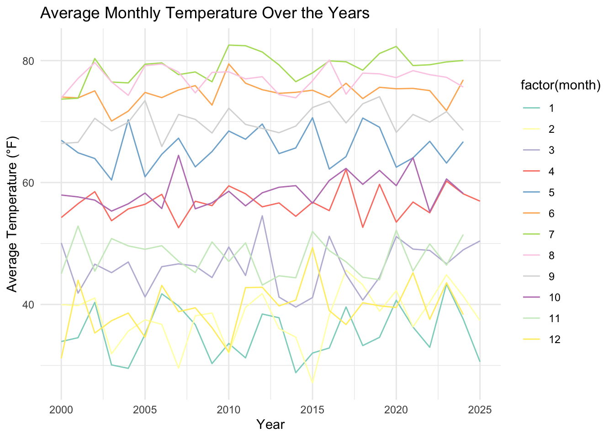
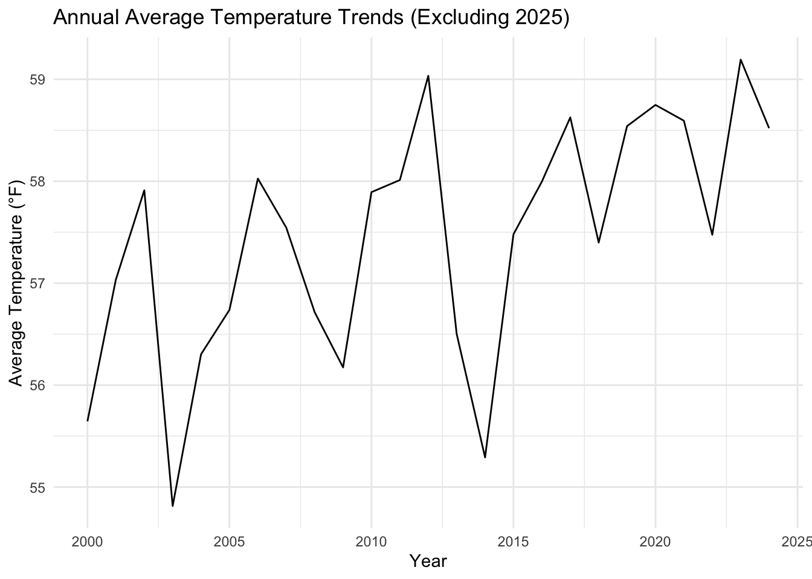
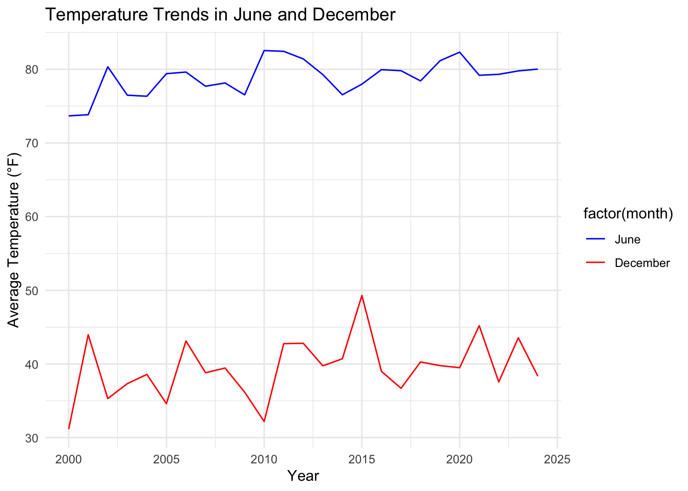
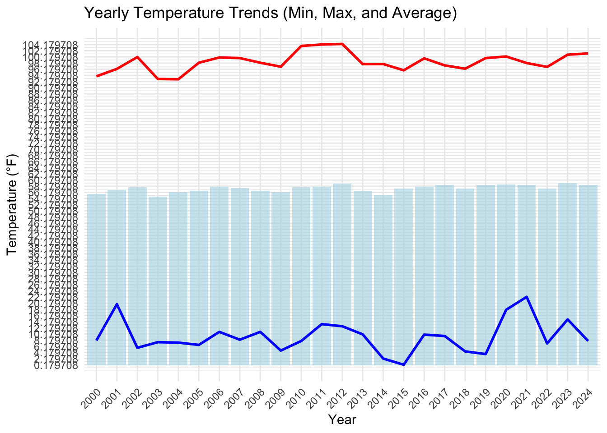
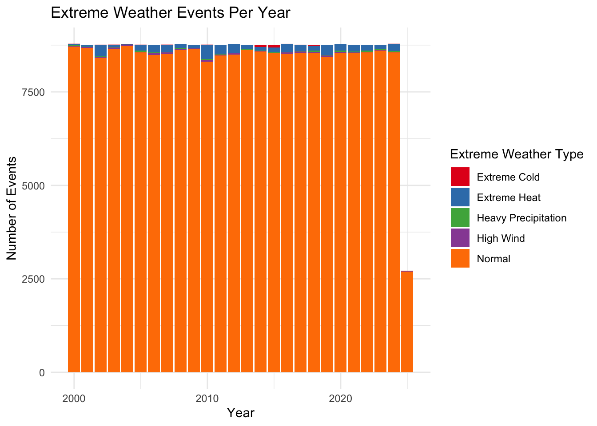
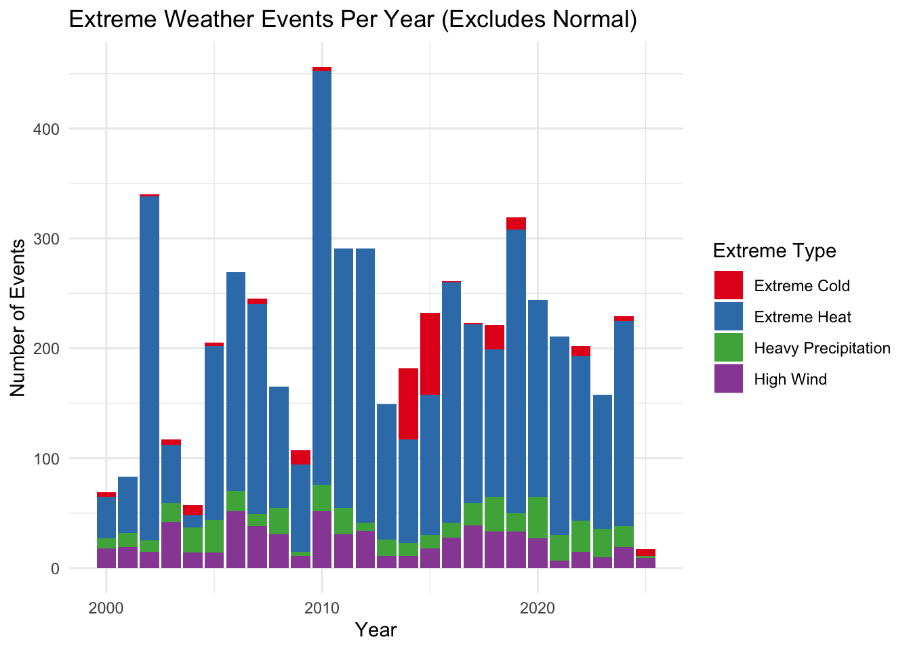
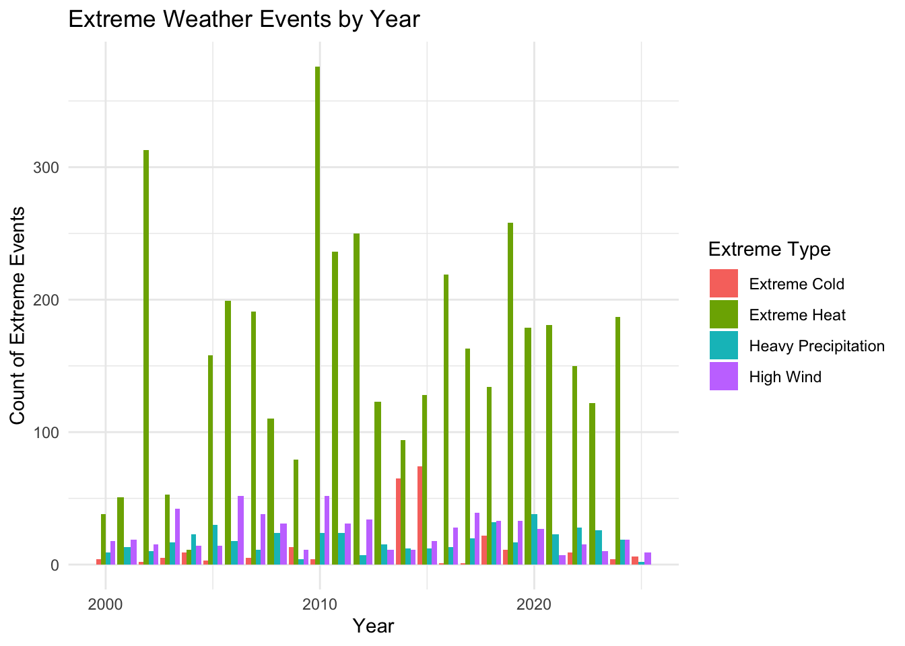
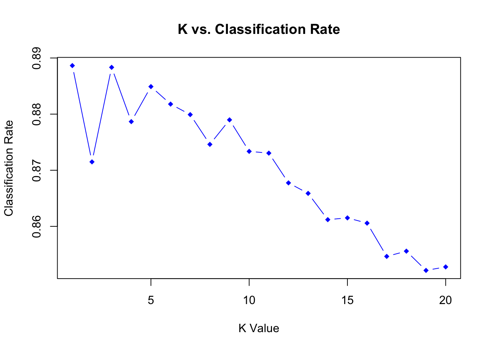
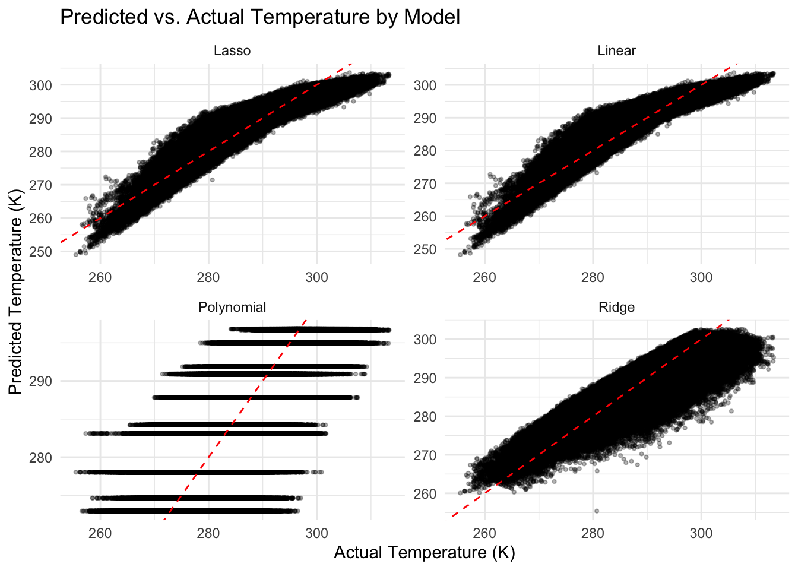

── Conflicts ────────────────────────────────────────── tidyverse_conflicts() ──
✖ dplyr::filter() masks stats::filter()
✖ dplyr::lag() masks stats::lag()
ℹ Use the conflicted package (<http://conflicted.r-lib.org/>) to force all conflicts to become errors
library(lubridate)library(glmnet)
Loading required package: Matrix
Attaching package: 'Matrix'
The following objects are masked from 'package:tidyr':
expand, pack, unpack
Loaded glmnet 4.1-8
library(pls)
Attaching package: 'pls'
The following object is masked from 'package:stats':
loadings
valid_time u10 v10
Min. :2000-01-01 00:00:00 Min. :-12.3994 Min. :-10.7071
1st Qu.:2006-04-30 05:45:00 1st Qu.: -0.8662 1st Qu.: -1.7633
Median :2012-08-27 11:30:00 Median : 0.7404 Median : -0.2191
Mean :2012-08-27 11:30:00 Mean : 0.7105 Mean : -0.1161
3rd Qu.:2018-12-25 17:15:00 3rd Qu.: 2.1105 3rd Qu.: 1.5733
Max. :2025-04-23 23:00:00 Max. : 11.4578 Max. : 9.4432
d2m t2m msl sp
Min. :241.6 Min. :255.5 Min. : 96863 Min. : 95874
1st Qu.:271.9 1st Qu.:279.1 1st Qu.:101286 1st Qu.:100282
Median :281.1 Median :287.6 Median :101729 Median :100719
Mean :280.1 Mean :287.2 Mean :101747 Mean :100729
3rd Qu.:289.1 3rd Qu.:295.5 3rd Qu.:102210 3rd Qu.:101184
Max. :300.7 Max. :313.4 Max. :104788 Max. :103686
tp latitude longitude date
Min. :0.000e+00 Min. :39 Min. :-77 Min. :2000-01-01
1st Qu.:0.000e+00 1st Qu.:39 1st Qu.:-77 1st Qu.:2006-04-30
Median :0.000e+00 Median :39 Median :-77 Median :2012-08-27
Mean :1.271e-04 Mean :39 Mean :-77 Mean :2012-08-27
3rd Qu.:2.861e-06 3rd Qu.:39 3rd Qu.:-77 3rd Qu.:2018-12-25
Max. :1.792e-02 Max. :39 Max. :-77 Max. :2025-04-23
year month day hour
Min. :2000 Min. : 1.000 Min. : 1.00 Min. : 0.00
1st Qu.:2006 1st Qu.: 3.000 1st Qu.: 8.00 1st Qu.: 5.75
Median :2012 Median : 6.000 Median :16.00 Median :11.50
Mean :2012 Mean : 6.472 Mean :15.72 Mean :11.50
3rd Qu.:2018 3rd Qu.: 9.000 3rd Qu.:23.00 3rd Qu.:17.25
Max. :2025 Max. :12.000 Max. :31.00 Max. :23.00
t2m_f d2m_f
Min. : 0.1797 Min. :-24.87
1st Qu.: 42.6561 1st Qu.: 29.69
Median : 58.0968 Median : 46.35
Mean : 57.2730 Mean : 44.54
3rd Qu.: 72.2645 3rd Qu.: 60.77
Max. :104.3832 Max. : 81.61
# Calculate total wind speed in m/sweather_clean <- weather_clean %>%mutate(wind_speed =sqrt(u10^2+ v10^2), # Calculate total wind speed in m/swind_speed_kmh = wind_speed *3.6# Convert wind speed to km/h )# Check the first few rows to confirm the calculationhead(weather_clean)
# Calculate monthly average temperatures by yearmonthly_avg_temp <- climate_data %>%group_by(year, month) %>%summarise(avg_temp =mean(t2m_f, na.rm =TRUE))
`summarise()` has grouped output by 'year'. You can override using the
`.groups` argument.
# Plot the monthly averages for each yearggplot(monthly_avg_temp, aes(x = year, y = avg_temp, color =factor(month))) +geom_line() +labs(title ="Average Monthly Temperature Over the Years",x ="Year", y ="Average Temperature (°F)") +theme_minimal() +scale_color_brewer(palette ="Set3")

# Filter out 2025 annual_avg_temp <- climate_data %>%filter(year !=2025) %>%group_by(year) %>%summarise(avg_temp =mean(t2m_f, na.rm =TRUE))# Plot the annual temperature trendsggplot(annual_avg_temp, aes(x = year, y = avg_temp)) +geom_line() +labs(title ="Annual Average Temperature Trends (Excluding 2025)",x ="Year", y ="Average Temperature (°F)") +theme_minimal()

# Filter for June and December only# This is to check that data looks accurate for warm/cool months typically to ensure we have correct coordinatesjune_december_data <- climate_data %>%filter(month ==7| month ==12)# Calculate average temperature for June and December across yearsjune_december_avg_temp <- june_december_data %>%group_by(year, month) %>%summarise(avg_temp =mean(t2m_f, na.rm =TRUE))
`summarise()` has grouped output by 'year'. You can override using the
`.groups` argument.
# Plot the temperature trends for June and Decemberggplot(june_december_avg_temp, aes(x = year, y = avg_temp, color =factor(month))) +geom_line() +labs(title ="Temperature Trends in June and December",x ="Year", y ="Average Temperature (°F)") +theme_minimal() +scale_color_manual(values =c("blue", "red"), labels =c("June", "December"))

# Remove rows with missing values for temperatureyearly_temp_stats <- climate_data %>%filter(year !=2025) %>%filter(!is.na(t2m_f)) %>%group_by(year) %>%summarise(avg_temp =mean(t2m_f, na.rm =TRUE),min_temp =min(t2m_f, na.rm =TRUE),max_temp =max(t2m_f, na.rm =TRUE) )# Check if any missing values were presentsummary(yearly_temp_stats)
year avg_temp min_temp max_temp
Min. :2000 Min. :54.81 Min. : 0.1797 Min. : 92.91
1st Qu.:2006 1st Qu.:56.72 1st Qu.: 6.6202 1st Qu.: 96.92
Median :2012 Median :57.55 Median : 8.0440 Median : 98.28
Mean :2012 Mean :57.45 Mean : 9.3580 Mean : 98.57
3rd Qu.:2018 3rd Qu.:58.52 3rd Qu.:10.8568 3rd Qu.:100.13
Max. :2024 Max. :59.19 Max. :22.2231 Max. :104.38
# Plot the min, max, and avg temperature trends by yearggplot(yearly_temp_stats, aes(x =factor(year))) +geom_bar(aes(y = avg_temp), stat ="identity", fill ="lightblue", alpha =0.6) +geom_line(aes(y = min_temp), color ="blue", size =1, group =1) +geom_line(aes(y = max_temp), color ="red", size =1, group =1) +labs(title ="Yearly Temperature Trends (Min, Max, and Average)",x ="Year", y ="Temperature (°F)") +theme_minimal() +theme(axis.text.x =element_text(angle =45, hjust =1)) +scale_y_continuous(breaks =seq(min(yearly_temp_stats$min_temp), max(yearly_temp_stats$max_temp), by =2))
Warning: Using `size` aesthetic for lines was deprecated in ggplot2 3.4.0.
ℹ Please use `linewidth` instead.

summary(weather_clean$tp)
Min. 1st Qu. Median Mean 3rd Qu. Max.
0.000e+00 0.000e+00 0.000e+00 1.271e-04 2.861e-06 1.792e-02
# Count the number of each extreme type by yearextreme_counts <- weather_classified %>%group_by(year, extreme_type) %>%summarize(count =n(), .groups ='drop')# Plotggplot(extreme_counts, aes(x = year, y = count, fill = extreme_type)) +geom_bar(stat ="identity", position ="stack") +scale_fill_brewer(palette ="Set1") +labs(title ="Extreme Weather Events Per Year",x ="Year",y ="Number of Events",fill ="Extreme Weather Type" ) +theme_minimal()

# Only keep rows that are classified as extreme, normal has class imbalanceextreme_only <- weather_classified %>%filter(extreme_type !="Normal")# Count by year and typeextreme_counts <- extreme_only %>%group_by(year, extreme_type) %>%summarize(count =n(), .groups ='drop')# Plot only extreme eventsggplot(extreme_counts, aes(x = year, y = count, fill = extreme_type)) +geom_bar(stat ="identity", position ="stack") +scale_fill_brewer(palette ="Set1") +labs(title ="Extreme Weather Events Per Year (Excludes Normal)",x ="Year",y ="Number of Events",fill ="Extreme Type" ) +theme_minimal()

# Total count of each extreme weather typeoverall_extreme_summary <- extreme_only %>%group_by(extreme_type) %>%summarize(total_count =n(), .groups ="drop")# View the summaryoverall_extreme_summary
# A tibble: 4 × 2
extreme_type total_count
<chr> <int>
1 Extreme Cold 238
2 Extreme Heat 4003
3 Heavy Precipitation 471
4 High Wind 631
# Count number of extreme events per yearextreme_counts_by_year <- weather_classified %>%filter(extreme_type !="Normal") %>%group_by(year, extreme_type) %>%summarise(count =n(), .groups ="drop")# Plotggplot(extreme_counts_by_year, aes(x = year, y = count, fill = extreme_type)) +geom_col(position ="dodge") +labs(title ="Extreme Weather Events by Year",x ="Year",y ="Count of Extreme Events",fill ="Extreme Type" ) +theme_minimal()

# Encoding 0 and 1 for each extreme weather typeweather_classified_binary <- weather_classified %>%mutate(is_extreme_cold =ifelse(extreme_type =="Extreme Cold", 1, 0),is_extreme_heat =ifelse(extreme_type =="Extreme Heat", 1, 0),is_heavy_precipitation =ifelse(extreme_type =="Heavy Precipitation", 1, 0),is_high_wind =ifelse(extreme_type =="High Wind", 1, 0),is_normal =ifelse(extreme_type =="Normal", 1, 0) )# Summarize the data to count the number of occurrences for each weather classificationextreme_summary <- weather_classified_binary %>%summarise(Extreme_Cold =sum(is_extreme_cold),Extreme_Heat =sum(is_extreme_heat),Heavy_Precipitation =sum(is_heavy_precipitation),High_Wind =sum(is_high_wind),Normal =sum(is_normal) )extreme_summary
Here we see an extremely high accuracy, which is due to a class imbalance. Because of this, we should try again with more balanced classes.
#Undersample 'Normal' to match number of 'Extreme Weather' casesnormal <- weather_classified_binary %>%filter(extreme_weather_binary =="Normal")extreme <- weather_classified_binary %>%filter(extreme_weather_binary =="Extreme Weather")set.seed(123)normal_sample <- normal %>%sample_n(nrow(extreme))balanced_data <-bind_rows(extreme, normal_sample)
#KNN Model wih balanced data X <- balanced_data %>% dplyr::select(where(is.numeric))y <- balanced_data$extreme_weather_binaryset.seed(123)train_idx <-sample(nrow(balanced_data), 0.7*nrow(balanced_data))Xtrain <- X[train_idx, ]Xtest <- X[-train_idx, ]ytrain <- y[train_idx]ytest <- y[-train_idx]knn_pred <-knn(train = Xtrain, test = Xtest, cl = ytrain, k =3)conf_matrix_knn <-table(Predicted = knn_pred, Actual = ytest)conf_matrix_knn
Actual
Predicted Extreme Weather Normal
Extreme Weather 1406 195
Normal 163 1442
plot(1:20, classification_rates, type ="b", pch =18, col ="blue",xlab ="K Value", ylab ="Classification Rate",main ="K vs. Classification Rate")

Here we see that as we increase K, the classification rate decreases, which we can expect due to what we have referred to as the “curse of dimensionality” which is when the number of features p is large there tends to be a deterioration in the performance of KNN.
# Logistic regression model to predict extreme weather logit_data <- weather_classified_binary %>%mutate(extreme_weather_binary =factor(extreme_weather_binary))X <- logit_data %>% dplyr::select(t2m_f, d2m_f, wind_speed_kmh, msl, sp, tp)y <- logit_data$extreme_weather_binarylogit_df <-cbind(X, extreme_weather_binary = y)logit_model <-glm(extreme_weather_binary ~ ., data = logit_df, family = binomial)summary(logit_model)
Call:
glm(formula = extreme_weather_binary ~ ., family = binomial,
data = logit_df)
Coefficients:
Estimate Std. Error z value Pr(>|z|)
(Intercept) -9.599e+00 3.776e+00 -2.542 0.011 *
t2m_f -6.726e-01 7.334e-03 -91.708 <2e-16 ***
d2m_f 4.399e-02 2.779e-03 15.828 <2e-16 ***
wind_speed_kmh -1.382e-01 4.174e-03 -33.113 <2e-16 ***
msl -3.535e-01 4.412e-03 -80.131 <2e-16 ***
sp 3.576e-01 4.462e-03 80.144 <2e-16 ***
tp -1.356e+03 2.222e+01 -61.045 <2e-16 ***
---
Signif. codes: 0 '***' 0.001 '**' 0.01 '*' 0.05 '.' 0.1 ' ' 1
(Dispersion parameter for binomial family taken to be 1)
Null deviance: 50376 on 221879 degrees of freedom
Residual deviance: 19995 on 221873 degrees of freedom
AIC: 20009
Number of Fisher Scoring iterations: 9
# Generate predictions and evaluate model accuracylogit_probs <-predict(logit_model, type ="response")logit_preds <-ifelse(logit_probs >0.5, "Extreme Weather", "Normal")logit_preds <-factor(logit_preds, levels =levels(y))conf_matrix <-table(Predicted = logit_preds, Actual = y)conf_matrix
Actual
Predicted Extreme Weather Normal
Extreme Weather 2669 215862
Normal 2674 675
mean(logit_preds == y)
[1] 0.01507121
The logistic regression model shows significant class imbalance, with the model predicting nearly all cases as “Extreme Weather.” Despite strong statistical significance in the coefficients, the overall accuracy is only 1.5%, indicating poor predictive performance. This suggests that the model is not effectively distinguishing between normal and extreme weather, and rebalancing the dataset or applying class weights is necessary for better classification.
# Rebalance dataset by downsampling the majority classextreme <- logit_df %>%filter(extreme_weather_binary =="Extreme Weather")normal <- logit_df %>%filter(extreme_weather_binary =="Normal") %>%sample_n(nrow(extreme))balanced_df <-bind_rows(extreme, normal)# Fit logistic regression model on balanced datalogit_model_bal <-glm(extreme_weather_binary ~ ., data = balanced_df, family = binomial)# Generate predictions and evaluatelogit_probs <-predict(logit_model_bal, type ="response")logit_preds <-ifelse(logit_probs >0.5, "Extreme Weather", "Normal")logit_preds <-factor(logit_preds, levels =levels(balanced_df$extreme_weather_binary))conf_matrix_logit <-table(Predicted = logit_preds, Actual = balanced_df$extreme_weather_binary)conf_matrix_logit
Actual
Predicted Extreme Weather Normal
Extreme Weather 231 4893
Normal 5112 450
After rebalancing the dataset to address class imbalance, the logistic regression model still performed poorly, with only 6.4% accuracy. The confusion matrix shows that the model continues to misclassify most observations, suggesting that the relationship between predictors and extreme weather is likely non-linear or too complex for logistic regression to capture. This indicates that more flexible models, such as QDA, LDA, or tree-based methods, may be better suited for this classification task.
#ROC Curve and Error Evaluation prob <-predict(logit_model_bal, type ="response")actual <-ifelse(balanced_df$extreme_weather_binary =="Extreme Weather", 1, 0)threshold <-seq(0, 1, 0.01)TPR <- FPR <- err.rate <-rep(0, length(threshold))for (i inseq_along(threshold)) { Yhat <-ifelse(prob >= threshold[i], 1, 0) err.rate[i] <-mean(Yhat != actual) TPR[i] <-sum(Yhat ==1& actual ==1) /sum(actual ==1) FPR[i] <-sum(Yhat ==1& actual ==0) /sum(actual ==0)}ggplot(tibble(threshold, err.rate), aes(threshold, err.rate)) +geom_point() +labs(x ="Threshold", y ="Error Rate", title ="Error Rate vs. Threshold") +theme_minimal()
As we mentioned before, and reemphasized by what we see here with the ROC curve and error rate graphs, it does not seem Logistic Regression is a strong method to fit our data. Especially given this upside own U shape we see, that possibly suggests that the relationship between the predictors and the outcome is more complex than logistic regression can handle. We may need more flexible models that can capture this data.
The LDA and QDA models performed significantly better than logistic regression, with classification accuracies of approximately 91.97% and 93.99%, respectively. This improvement suggests that the relationship between features and extreme weather events is non-linear and better captured by flexible, distribution-based models like LDA and QDA. These results indicate that QDA, in particular, may be a strong candidate for classifying extreme weather in this dataset. This aligns with our previous findings, given that QDA is a more flexible model and may be able to capture our data better than other models.
# LDA Results lda_results_df <-data.frame(Metric =c("Best Threshold","TPR at Best Threshold","FPR at Best Threshold"),Value =c(best_threshold_lda, best_TPR_lda, best_FPR_lda))lda_results_df
Metric Value
1 Best Threshold 0.6600000
2 TPR at Best Threshold 0.9365525
3 FPR at Best Threshold 0.0782332
# QDA Results qda_results_df <-data.frame(Metric =c("Best Threshold","TPR at Best Threshold","FPR at Best Threshold"),Value =c(best_threshold_qda, best_TPR_qda, best_FPR_qda))qda_results_df
Metric Value
1 Best Threshold 0.58000000
2 TPR at Best Threshold 0.94684634
3 FPR at Best Threshold 0.06120157
After evaluating the models, it seems that QDA performs better. While looking at the ROC curves and error rates, we found that the best threshold for LDA is 0.66 and QDA is 0.58.
2) Predictions for temperature patterns using Regression Methods
lm_model <-lm(t2m ~ ., data = regression_df)summary(lm_model)
Call:
lm(formula = t2m ~ ., data = regression_df)
Residuals:
Min 1Q Median 3Q Max
-13.644 -1.755 -0.045 1.828 12.022
Coefficients:
Estimate Std. Error t value Pr(>|t|)
(Intercept) 2.652e+02 1.015e+00 261.30 <2e-16 ***
month -1.266e-01 1.889e-03 -67.02 <2e-16 ***
d2m_f 9.653e-02 8.218e-04 117.47 <2e-16 ***
wind_speed_kmh 1.304e-01 1.345e-03 96.91 <2e-16 ***
msl -2.809e-01 4.962e-04 -566.05 <2e-16 ***
sp 2.839e-01 5.012e-04 566.35 <2e-16 ***
tp -2.856e+02 1.185e+01 -24.09 <2e-16 ***
---
Signif. codes: 0 '***' 0.001 '**' 0.01 '*' 0.05 '.' 0.1 ' ' 1
Residual standard error: 2.925 on 221873 degrees of freedom
Multiple R-squared: 0.9165, Adjusted R-squared: 0.9165
F-statistic: 4.061e+05 on 6 and 221873 DF, p-value: < 2.2e-16
The linear regression model achieved a high R² of 0.9165, indicating that over 91% of the variation in temperature (t2m) is explained by the selected predictors. All predictors were statistically significant, and the residual standard error was relatively low at 2.93, suggesting a good overall fit.
Polynomial Regression
poly_model <-lm(t2m ~poly(month, 3), data = regression_df)summary(poly_model)
Call:
lm(formula = t2m ~ poly(month, 3), data = regression_df)
Residuals:
Min 1Q Median 3Q Max
-25.8004 -3.9756 -0.0942 3.8774 23.5640
Coefficients:
Estimate Std. Error t value Pr(>|t|)
(Intercept) 2.872e+02 1.249e-02 22990.9 <2e-16 ***
poly(month, 3)1 1.052e+03 5.884e+00 178.8 <2e-16 ***
poly(month, 3)2 -3.652e+03 5.884e+00 -620.6 <2e-16 ***
poly(month, 3)3 -7.843e+02 5.884e+00 -133.3 <2e-16 ***
---
Signif. codes: 0 '***' 0.001 '**' 0.01 '*' 0.05 '.' 0.1 ' ' 1
Residual standard error: 5.884 on 221876 degrees of freedom
Multiple R-squared: 0.6622, Adjusted R-squared: 0.6622
F-statistic: 1.45e+05 on 3 and 221876 DF, p-value: < 2.2e-16
The polynomial regression model used a 3rd-degree transformation of the month variable to model seasonal trends in temperature. While all terms were significant, the R² was lower at 0.6622, and the residual error was larger compared to the full linear model. This suggests that month alone, even with polynomial terms, is insufficient for accurate temperature prediction.
7 x 1 sparse Matrix of class "dgCMatrix"
s1
(Intercept) 3.103112e+02
month 1.502869e-02
d2m_f 4.449462e-01
wind_speed_kmh 7.656431e-02
msl -8.733042e-04
sp 4.489621e-04
tp -1.472486e+03
coef(cv_lasso, s ="lambda.min")
7 x 1 sparse Matrix of class "dgCMatrix"
s1
(Intercept) 263.7685249
month -0.1206200
d2m_f 0.1296713
wind_speed_kmh 0.1319299
msl -0.2578833
sp 0.2606600
tp -405.8219062
Ridge regression, which shrinks coefficients but retains all predictors, produced an RMSE of 4.65. While this is worse than the linear and lasso models, ridge was likely affected by collinearity among predictors and over-smoothing due to the penalty term.
Lasso regression yielded the best performance among the penalized methods, with an RMSE of 2.94 — very close to the unregularized linear model. It also performed variable selection, shrinking some coefficients more aggressively (e.g., tp) while still retaining key predictors, making it a strong choice for both accuracy and interpretability.
Regression Models
library(glmnet)library(ggplot2)# Prepare dataregression_df <- weather_clean %>% dplyr::select(t2m, month, d2m_f, wind_speed_kmh, msl, sp, tp) %>%drop_na()X <-model.matrix(t2m ~ ., regression_df)[, -1]y <- regression_df$t2m# 1. Linear Regressionlm_model <-lm(t2m ~ ., data = regression_df)lm_preds <-predict(lm_model)# 2. Polynomial Regression (month as poly term)poly_model <-lm(t2m ~poly(month, 3), data = regression_df)poly_preds <-predict(poly_model)# 3. Ridge Regressioncv_ridge <-cv.glmnet(X, y, alpha =0)ridge_preds <-predict(cv_ridge, s ="lambda.min", newx = X)# 4. Lasso Regressioncv_lasso <-cv.glmnet(X, y, alpha =1)lasso_preds <-predict(cv_lasso, s ="lambda.min", newx = X)# Create long-format dataframe for plottingplot_df <-data.frame(Actual = y,Linear = lm_preds,Polynomial = poly_preds,Ridge =as.vector(ridge_preds),Lasso =as.vector(lasso_preds)) %>%pivot_longer(-Actual, names_to ="Model", values_to ="Predicted")# Plot predicted vs. actualggplot(plot_df, aes(x = Actual, y = Predicted)) +geom_point(alpha =0.3, size =0.8) +geom_abline(slope =1, intercept =0, color ="red", linetype ="dashed") +facet_wrap(~Model, scales ="free") +labs(title ="Predicted vs. Actual Temperature by Model",x ="Actual Temperature (K)", y ="Predicted Temperature (K)") +theme_minimal()

Evaluation and Cross Validation
# Classification model comparisonclassification_results <-data.frame(Model =c("KNN (Unbalanced)", "KNN (Balanced)", "Logistic Regression", "LDA", "QDA"),Accuracy =c(0.985, 0.888, 0.064, 0.9197, 0.9399),Balanced_Accuracy =c(0.50, NA, NA, NA, NA),Notes =c("Overestimates due to class imbalance","More realistic; tuned with CV","Underperforms despite significance","Strong separation with linear boundaries","Best classifier; handles non-linearity" ))knitr::kable(classification_results, caption ="Classification Model Comparison")
Classification Model Comparison
Model
Accuracy
Balanced_Accuracy
Notes
KNN (Unbalanced)
0.9850
0.5
Overestimates due to class imbalance
KNN (Balanced)
0.8880
NA
More realistic; tuned with CV
Logistic Regression
0.0640
NA
Underperforms despite significance
LDA
0.9197
NA
Strong separation with linear boundaries
QDA
0.9399
NA
Best classifier; handles non-linearity
# Regression model comparisonregression_results <-data.frame(Model =c("Linear Regression", "Polynomial Regression", "Ridge Regression", "Lasso Regression"),RMSE =c(2.93, 5.88, 4.65, 2.94),Adjusted_R2 =c(0.9165, 0.6622, NA, NA),Notes =c("Best overall fit; all predictors significant","Captures seasonality; limited features","Regularized; retains all predictors","Sparse solution; similar to linear" ))regression_results
Model RMSE Adjusted_R2
1 Linear Regression 2.93 0.9165
2 Polynomial Regression 5.88 0.6622
3 Ridge Regression 4.65 NA
4 Lasso Regression 2.94 NA
Notes
1 Best overall fit; all predictors significant
2 Captures seasonality; limited features
3 Regularized; retains all predictors
4 Sparse solution; similar to linear
We evaluated multiple classification methods to predict extreme weather events, including K-Nearest Neighbors (KNN), logistic regression, LDA, and QDA. KNN initially appeared highly accurate (>98%), but deeper inspection revealed this was due to severe class imbalance. After balancing the data, KNN’s performance became more realistic, achieving ~88% accuracy and a balanced accuracy of 0.5. Logistic regression struggled even after rebalancing, with only 6.4% accuracy, indicating it could not capture complex decision boundaries. LDA and QDA, by contrast, performed significantly better, with classification accuracies of 91.97% and 93.99% respectively, showing that distribution-based models can better handle the underlying structure of extreme weather classification. Cross-validation was used to select the optimal number of neighbors in KNN and to ensure fair model comparison. These results highlight the importance of both class balance and cross-validation in evaluating classifier performance in imbalanced real-world datasets.
To evaluate model performance, we used RMSE (Root Mean Squared Error) and adjusted R² across four regression approaches: linear, polynomial, ridge, and lasso. The standard linear model performed best overall, with an adjusted R² of 0.9165 and a low residual error, indicating a strong linear relationship between temperature and the selected predictors. Polynomial regression, despite modeling seasonal trends with month, showed weaker performance due to its limited feature scope. Ridge regression used cross-validation to select the optimal penalty parameter (λ), but still underperformed with an RMSE of 4.65. Lasso regression also used cross-validation for tuning and achieved a much lower RMSE of 2.94 by automatically selecting relevant features. These results underscore the effectiveness of regularized models when handling collinearity or when model simplicity is preferred. Cross-validation played a key role in objectively comparing flexibility and prediction error, helping avoid overfitting.